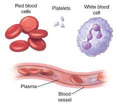
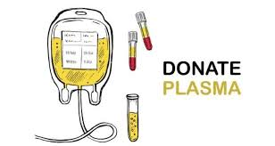

What is plasma?
Plasma is the clear, straw-colored liquid portion of blood that remains after red blood cells, white blood cells, platelets and other cellular components are removed. It is the single largest component of human blood, comprising about 55 percent, and contains water, salts, enzymes, antibodies and other proteins.
Composed of 90% water, plasma is a transporting medium for cells and a variety of substances vital to the human body
Plasma carries out a variety of functions in the body, including clotting blood, fighting diseases and other critical functions.
Recovered plasma is collected through whole blood donation in which plasma is separated from its cellular components. Recovered plasma may be used for fractionation.
Plasma Donation
Become a part of the lifesaving journey that plasma takes from a dedicated donor to the thousands of patients with rare diseases who depend on plasma protein therapies to lead healthy, productive, and fulfilling lives.
Source plasma collection centers are also certified by the International Quality Plasma Program (IQPP), a rigorous, voluntary program that goes beyond regulatory requirements to help ensure donor safety and further improve the quality of source plasma used for fractionation.
Source plasma is collected through a process called plasmapheresis. In more than 900 specialized donation centers located in the U.S. and Europe, individuals may donate plasma. Plasmapheresis is a sterile, self-contained, automated process that separates plasma from red blood cells and other cellular components which are then returned to the donor.
Donor Frequently Asked Questions
{{x.ques}}
{{x.ans}}
Plasma Donation Center
| Center Name | Helpline Number |
|---|---|
| {{ x.name }} | {{ x.phone }} |
| View More | |